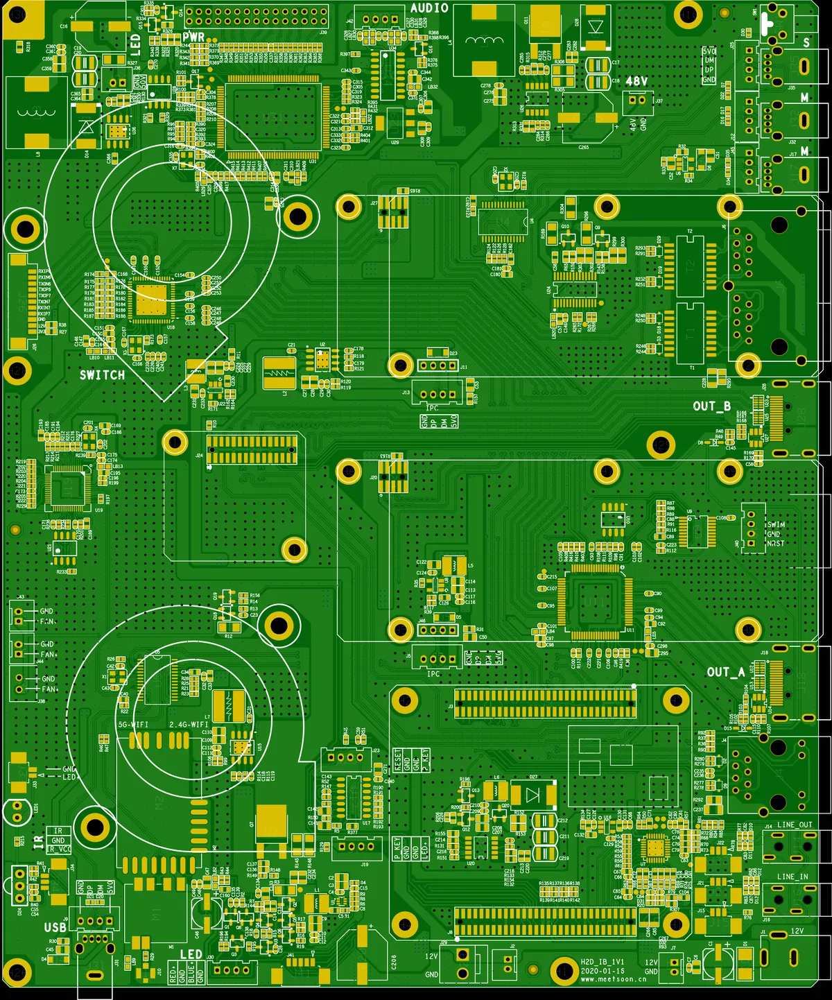
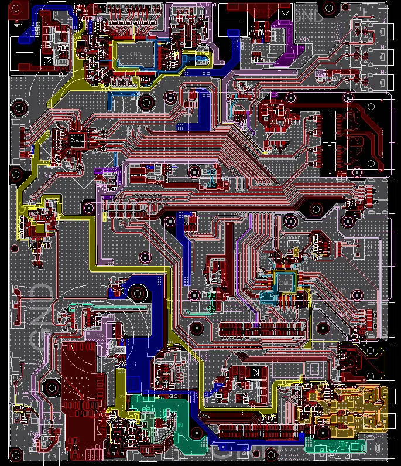

编程语言
LANGUAGES
- C
- C++
- Python
- ARM 汇编
- Rust
开放机会 · 嵌入式 / 固件方向
我是 Jupiter，一名嵌入式软件工程师。写 MCU 固件、调 RTOS 调度、抠每一微安的功耗—— 把原理图上的连线，变成能在产线上跑、在现场跑十年的设备。
01 / 关于
我的第一块板子是一块 STM32 最小系统板。焊完、上电、LED 亮起来的那一刻，我就没打算再去做纯软件。
现在主要做工业控制和物联网设备：从器件选型、看原理图、写驱动、移植 RTOS，到产线测试工装和现场问题定位，一条链路走完。
习惯用示波器和逻辑分析仪说话，而不是只靠 printf 猜。
我关心的不只是「功能能不能跑」——还有断电重启后能不能自恢复、连续跑 30 天会不会漏内存、打静电的时候会不会死机。
时序问题、总线冲突、电源毛刺，示波器一眼就能看清，猜代码往往越改越乱。
中断里只置标志，业务放进任务里跑；谁在什么时候改了哪个变量，必须查得到。
看门狗、掉电保存、通信超时重连、固件回滚——它们才是设备能在现场活下来的原因。
最近在折腾 Rust on Cortex-M · Zephyr 设备树 · 用 Python 写产线自动化测试
$ make -j8 flash monitor
[ 0.000 ] reset: SYSCLK 168 MHz, HSE ready
[ 0.012 ] flash: 1 MB, 38% used
[ 0.019 ] rtos: FreeRTOS 10.5.1 · 6 tasks · 4 KB heap free
[ 0.031 ] bus: CAN1 500 kbps · UART2 115200 · I2C1 400 kHz
[ 0.042 ] sensor: 8 ch ADC calibrated, drift 0.02%
[ ok ] watchdog armed, boot complete in 48 ms▌写代码之前，先想清楚它会在什么样的情况下坏掉。
02 / 技术栈
从寄存器到应用层，哪一层出问题就下到哪一层。
LANGUAGES
MCU & BOARDS
RTOS
PROTOCOLS
TOOLCHAIN
HARDWARE
03 / 项目
从板级硬件到固件，下面几个都是落地过的项目。

48V 供电的音频 / 网络接口主板。板载 5G 与 2.4G WiFi 模块、音频编解码与 LINE IN / OUT、两路输出、USB、IR 接收和风扇控制； 正反面丝印标全了接口与调试点，方便产线装配和现场排查。

高密度多层板：大电流回路与敏感小信号分区布置，电源平面分割、地平面完整性和过孔优化优先， 走线尽量缩短回流路径，给 EMC 留余量。
基于 STM32F407 + FreeRTOS 的八通道模拟量采集网关。本地做滑动平均与阈值判断，通过 Modbus RTU 上传 PLC， 支持参数远程配置与固件 OTA，掉电后自动恢复上次工作状态。
nRF52832 + 数字温振传感器，RTC 定时唤醒，采集三轴振动特征值后通过 BLE 广播。 整机休眠电流 1.8 µA，两节 AA 电池设计寿命三年，外壳 IP67。
STM32G431 + 三电阻采样，20 kHz 电流环、1 kHz 速度环、位置环三环控制。 支持霍尔与无感启动，带过流、过温、堵转保护，硬件保护响应小于 10 µs。
日常用的一组 C99 小工具：环形缓冲区、分级日志、命令行解析器、CRC16 查表生成器。 全部无动态内存、可裁剪，最小配置只占 4 KB Flash。
更多代码和笔记在 GitHub ↗